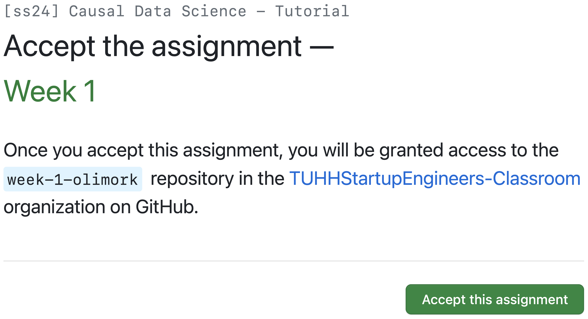
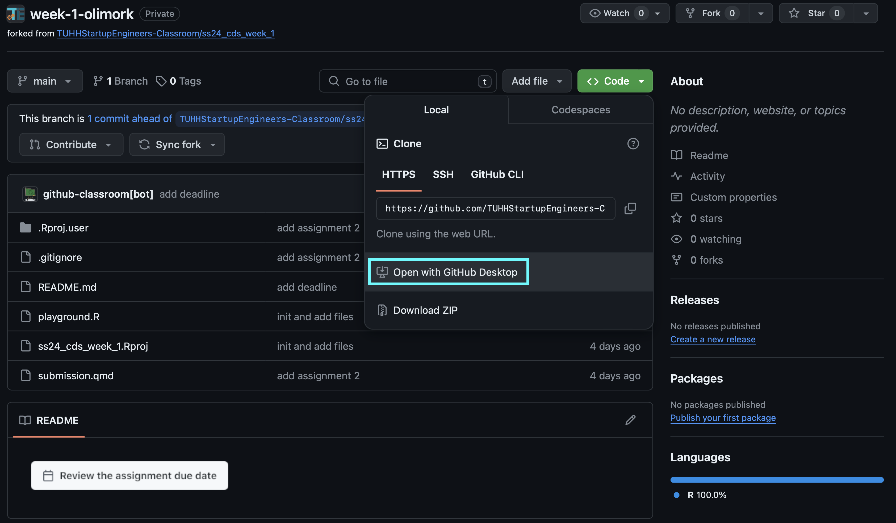
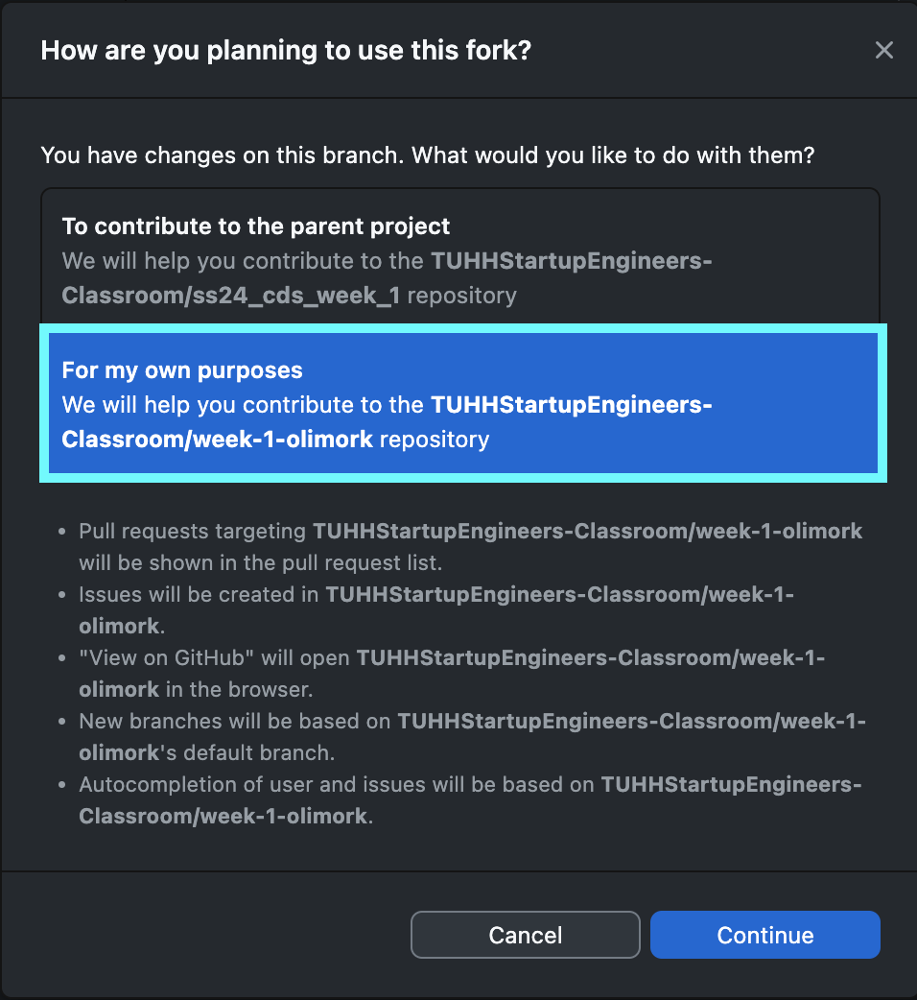
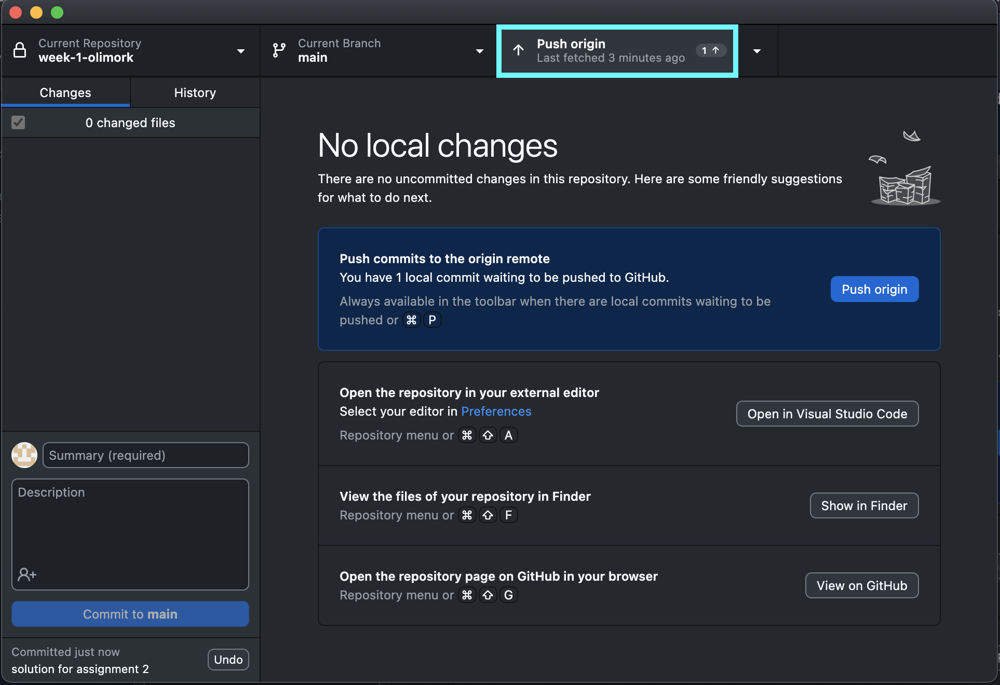

GitHub & Submission
Instructions
For each week, there will be assignments for you to solve writing and rendering R programming code in .qmd files using RStudio and uploading these files via GitHub1. We’ll go through it step by step, but briefly summarized, .qmd files allow writing text and code and rendering presentable .html files based on the Quarto2 infrastructure and GitHub is is a hosting platform for so called repositories, which typically consists of data and code. But don’t worry, after the instructions on this page, it will get a lot clearer.
In the following I will guide your through the necessary steps. Some details in the screenshot might not be identical and slightly deviate, but you should be able to follow the general workflow.
Initializing GitHub & GitHub Desktop
Create a free GitHub account. If you already have a GitHub account, you can skip this step.
Download and install GitHub Desktop and connect it to your account (Sign into GitHub.com). GitHub Desktop is a graphical user interface, which allows you to sync your local code changes with your online repository.
Check if
gitis installed on your system. It should already be the case but you can check it by openingRStudio, going to the terminal pane and enteringwhich git. It should output the file path togiton your system. If you don’t get the expected result, download and install git.Accept the assignment and follow through the steps to enter the virtual classroom. This is the assignment for the first week. For each week, you will be provided with a new assignment, which will be linked in the respective chapter. 
After a while (refresh your page), you will get the link to your repository, which is currently free of any content but contains the framework to publish your solutions at a later stage. Click on that link, which is highlighted in blue.
Clone your repository, i.e. you create a local version on your hard drive. Until now, your repository is online hosted on GitHub, but of course, you need a local version to open the files in RStudio and add your solutions and code to your repository. It will open GitHub Desktop (sign into your account if you haven’t done already) and lets you set the path on your local drive. 
After setting the path and confirming by clicking
Clone, you will be asked how you are planning “to use the fork”. Please make sure to selectFor my own purposes. This is important, because you do not want to change the original repository, but have your own version of it that you will modify (if you look carefully, you see that the links for the two options differ). Now go into your previously specified path and check whether the local version of the repository exists. If not, please read the steps again and check what you missed out.
Implementing your solution
You will find a couple of files in the repository. Let’s discuss some of them:
ss24_cds_week_1.Rproj: a R project file. It opens RStudio and mainly sets the correct working environment, which e.g. helps you load and save files.playground.R: a classical R script. Use it to prototype your code and solutions.submission.qmd: a file that contains a combination of markdown and executable code cells. Here, you will type in your final solutions and render a.htmlthat will be graded..csvfiles: data you will need for the lab session and assignments
These files, that are typically found in GitHub repositories, you can ignore for now:
README.md: to describe what the purpose of the repository is..gitignore: to set what files should be excluded from pushing changes.
Now, let’s simulate the workflow you will be going through to submit your solutions. We will just make a simple change and update the online version of the repository. But it is the exact workflow needed for all your submissions in the coming weeks.
You should be already in your local repository. Open the file
ss24_cds_week_1.Rproj. This will automatically open RStudio, and your current working environment will be inside this project. That means everything you save will be auto saved to this folder (unless you tell RStudio to save something somewhere else. Have a look at the files tab in the bottom right hand corner. Most files you click will be opened up as text files in the RStudio editor.Now open
submission.qmdand take a look at the assignments. The first one is already solved, so let’s take a look at the second one. Obviously, the questions are only for the purpose of demonstration, but let’s assume the question would be difficult.Open
playground.Rto try to find the solution to the question. Here, you will probably quickly come up with the right solution, which is to simply type2+2and let R give you the result.Transfer the command to
submission.qmdand paste it into an executable code chunk. At the top, you find a green C button with a plus toInsert a new code chunk(please also see the shortcut). Save the file.Then click on
Renderwhich will create the.htmlfile which is your actual submission. On most devices, the file will automatically be opened. If not, find the file in your folder and open it. Check whether you see the intended output. It should look like this file, but with the new solution added. If it looks very different from the example, please check whether in the header of your.qmdfileembed-resources: trueis enabled.
Uploading your solution
- If you are happy with your solution and the rendered file, you still have to upload it to GitHub. Otherwise, we can’t see it and are not able to grade it. Therefore, Go back to GitHub Desktop. You should see something similar to the image below. You can see what you changed in the
.qmdand the accompaniedhtmlshould be different as well. There might be a lot more changes that you expect because a lot of stuff ran in the background when rendering.
{kind=link}
- Now you still need to push your changes to GitHub. First, commit your changes at the left bottom by providing a short description of what you have changed and click on
Commit to main. Now you can push to origin (you might have toFetch originbeforehand).
 3. Take a look at your online repository and check if everything was successfully uploaded.
For each assignment, there will be a deadline and you can only push changes to GitHub until that deadline. As long as it is before the deadline, you can make as many changes as you want.
Submission
Submit your credentials and GitHub user name via the following form. If you do not submit your information, we won’t be able to evaluate your assignments. Please fill it out by Monday, 22 April 2024.
- Fill out the form. (once)
- Write your solutions down in a
.qmdfile and render. - Commit and push your changes to your GitHub